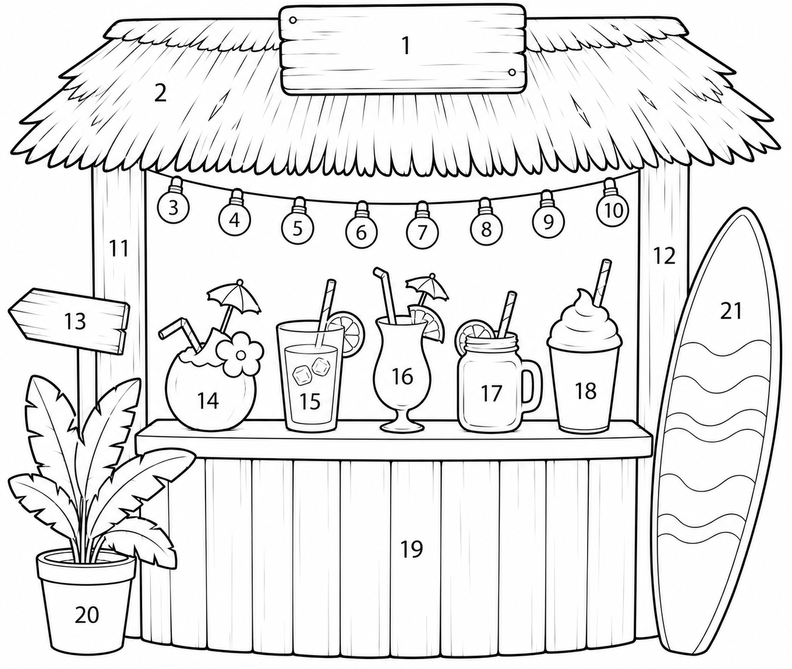
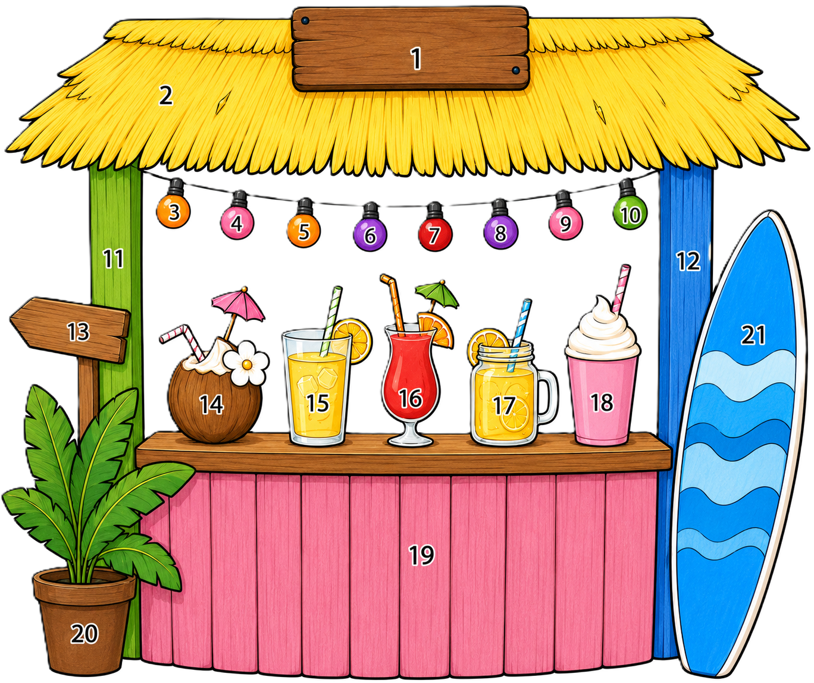

<!DOCTYPE html>
<html lang="nl">
<head>
<meta charset="UTF-8">
<meta name="viewport" content="width=device-width, initial-scale=1.0, maximum-scale=1.0, user-scalable=no">
<title>De Strandbar-zoektocht</title>
<style>
  :root {
    --zee:        #2A8FBD;
    --diepzee:    #1F6E94;
    --zand:       #F6E7C8;
    --zanddonker: #E9D2A0;
    --koraal:     #E8745C;
    --donker:     #234251;
    --kaartwit:   #FFFFFF;

    --rood:   #E63946;
    --oranje: #F4A261;
    --geel:   #F2C744;
    --groen:  #5BAA5F;
    --blauw:  #3B82B7;
    --paars:  #8E5BB5;
    --bruin:  #8B5A3C;
    --roze:   #E89BC0;
  }

  * { box-sizing: border-box; margin: 0; padding: 0; -webkit-tap-highlight-color: transparent; }

  html, body {
    min-height: 100%;
    font-family: 'Trebuchet MS', 'Segoe UI', Verdana, sans-serif;
    background: linear-gradient(180deg, #6FC5E3 0%, #2A8FBD 55%, #F6E7C8 55%, #EAD49E 100%);
    background-attachment: fixed;
    color: var(--donker);
  }

  /* zon */
  body::before {
    content: "";
    position: fixed;
    top: 4vh; right: 7vw;
    width: 64px; height: 64px;
    background: #FFD23F;
    border-radius: 50%;
    box-shadow: 0 0 0 8px rgba(255,210,63,.35), 0 0 40px rgba(255,210,63,.6);
    z-index: 0;
  }

  #app {
    position: relative;
    z-index: 1;
    min-height: 100vh;
    display: flex;
    flex-direction: column;
    align-items: center;
    justify-content: center;
    padding: 16px;
  }

  .kaart {
    background: var(--kaartwit);
    width: 100%;
    max-width: 680px;
    border-radius: 22px;
    border: 4px solid var(--diepzee);
    box-shadow: 0 14px 0 rgba(31,67,81,.18), 0 18px 30px rgba(0,0,0,.22);
    padding: 22px 24px 20px;
  }

  /* ---- start- en eindscherm ---- */
  .groot-titel {
    font-size: clamp(26px, 6vw, 40px);
    color: var(--zee);
    text-align: center;
    line-height: 1.15;
    margin-bottom: 8px;
  }
  .sub {
    text-align: center;
    font-style: italic;
    color: #6A7C88;
    font-size: clamp(14px, 3.4vw, 18px);
    margin-bottom: 18px;
  }
  .uitleg-tekst {
    font-size: clamp(15px, 3.6vw, 18px);
    line-height: 1.5;
    margin-bottom: 14px;
  }
  .start-tekening {
    margin: 4px 0 14px;
    text-align: center;
  }
  .start-tekening img {
    max-width: 100%;
    max-height: 320px;
    height: auto;
    border-radius: 14px;
    border: 2px solid #DDE6EC;
  }
  /* startpagina: stappen links, tekening rechts */
  .start-body {
    display: flex;
    gap: 18px;
    align-items: center;
  }
  .start-body .stappen { flex: 1 1 auto; margin: 0; }
  .start-body .start-tekening {
    flex: 0 0 auto;
    width: 300px;
    margin: 0;
  }
  @media (max-width: 620px) {
    .start-body { flex-direction: column; }
    .start-body .start-tekening { width: 100%; max-width: 320px; }
  }
  .stappen { list-style: none; margin: 6px 0 18px; }
  .stappen li {
    display: flex; align-items: flex-start; gap: 12px;
    margin-bottom: 10px;
    font-size: clamp(14px, 3.4vw, 17px);
    line-height: 1.4;
  }
  .stap-nr {
    flex: 0 0 auto;
    width: 30px; height: 30px;
    background: var(--zee);
    color: #fff; font-weight: bold;
    border-radius: 50%;
    display: flex; align-items: center; justify-content: center;
    font-size: 16px;
  }

  /* ---- vraagscherm ---- */
  .kop {
    display: flex; align-items: baseline; gap: 10px;
    flex-wrap: wrap;
    margin-bottom: 12px;
  }
  .vraag-nr {
    font-size: clamp(22px, 5.5vw, 30px);
    font-weight: bold;
    color: var(--zee);
  }
  .vak {
    font-style: italic;
    color: #8090A0;
    font-size: clamp(12px, 3vw, 15px);
  }
  .verhaal {
    background: #EAF4F9;
    border: 1.5px solid #CFE3EE;
    border-radius: 12px;
    padding: 12px 14px;
    font-style: italic;
    color: #3A4A5A;
    font-size: clamp(13px, 3.3vw, 16px);
    line-height: 1.45;
    margin-bottom: 12px;
  }
  .vraag-tekst {
    font-size: clamp(16px, 4.2vw, 21px);
    font-weight: bold;
    color: var(--donker);
    margin-bottom: 14px;
    line-height: 1.3;
  }

  /* rij: antwoorden links, afbeelding rechts */
  .vraag-body {
    display: flex;
    gap: 18px;
    align-items: stretch;
  }
  .vraag-body .opties { flex: 1 1 auto; }
  .afb-wrap {
    flex: 0 0 auto;
    width: 300px;
    background: #F4F7F9;
    border: 2px solid #DDE6EC;
    border-radius: 14px;
    padding: 12px;
    display: flex;
    align-items: center;
    justify-content: center;
  }
  .afb-wrap img {
    width: 100%;
    height: auto;
    max-height: 280px;
    object-fit: contain;
    border-radius: 8px;
    display: block;
  }
  /* op smalle schermen: afbeelding boven de antwoorden */
  @media (max-width: 560px) {
    .vraag-body { flex-direction: column-reverse; }
    .afb-wrap { width: 100%; max-width: 320px; margin: 0 auto; }
  }

  .opties { display: flex; flex-direction: column; gap: 10px; }
  .optie {
    display: flex; align-items: center; gap: 12px;
    background: #F4F7F9;
    border: 2px solid #DDE6EC;
    border-radius: 14px;
    padding: 10px 12px;
  }
  .letter {
    flex: 0 0 auto;
    width: 36px; height: 36px;
    border: 2px solid var(--zee);
    background: #fff;
    border-radius: 50%;
    display: flex; align-items: center; justify-content: center;
    font-weight: bold;
    font-size: 17px;
    color: var(--donker);
  }
  .optie-tekst {
    flex: 1 1 auto;
    font-size: clamp(14px, 3.6vw, 17px);
  }
  .kleurvak {
    flex: 0 0 auto;
    min-width: 96px;
    height: 38px;
    border: 2px solid #333;
    border-radius: 8px;
    display: flex; align-items: center; justify-content: center;
    font-weight: bold;
    font-size: clamp(12px, 3.2vw, 15px);
  }

  .voet {
    text-align: center;
    font-style: italic;
    color: #8090A0;
    font-size: clamp(11px, 2.9vw, 13px);
    margin-top: 14px;
  }

  /* ---- navigatieknoppen ---- */
  .nav {
    display: flex;
    gap: 12px;
    width: 100%;
    max-width: 680px;
    margin-top: 14px;
  }
  .knop {
    flex: 1 1 0;
    border: none;
    border-radius: 16px;
    padding: 16px 10px;
    font-family: inherit;
    font-size: clamp(15px, 4vw, 19px);
    font-weight: bold;
    cursor: pointer;
    box-shadow: 0 6px 0 rgba(0,0,0,.18);
    transition: transform .05s ease;
  }
  .knop:active { transform: translateY(3px); box-shadow: 0 3px 0 rgba(0,0,0,.18); }
  .knop-vorige {
    background: #DCE6EC;
    color: var(--donker);
  }
  .knop-volgende {
    background: var(--koraal);
    color: #fff;
  }
  .knop-groot {
    flex: none;
    background: var(--koraal);
    color: #fff;
    width: 100%;
    max-width: 680px;
    margin-top: 16px;
    padding: 18px;
    height: auto;
    min-height: 64px;
    font-size: clamp(17px, 4.4vw, 22px);
  }
  .knop:disabled { opacity: .35; cursor: default; box-shadow: 0 6px 0 rgba(0,0,0,.1); }

  .teller {
    text-align: center;
    color: #fff;
    font-weight: bold;
    font-size: clamp(13px, 3.2vw, 16px);
    margin-top: 10px;
    text-shadow: 0 2px 4px rgba(0,0,0,.3);
  }

  /* ---- eindscherm ---- */
  .oplossing-wrap {
    margin: 4px 0 14px;
    text-align: center;
  }
  .oplossing-wrap img {
    max-width: 100%;
    max-height: 420px;
    height: auto;
    border-radius: 14px;
    border: 2px solid #DDE6EC;
  }
  .eind-uitleg {
    font-size: clamp(13px, 3.2vw, 16px);
    color: #5A6B78;
    margin-bottom: 10px;
  }
  .eind-lijst {
    list-style: none;
    display: grid;
    grid-template-columns: 1fr 1fr 1fr;
    gap: 8px;
    margin-top: 6px;
  }
  .eind-rij {
    display: flex; align-items: center; gap: 10px;
    background: #F4F7F9;
    border: 1.5px solid #DDE6EC;
    border-radius: 10px;
    padding: 8px 10px;
    font-size: clamp(12px, 3vw, 15px);
  }
  .eind-vraag { font-weight: bold; color: var(--zee); flex: 1 1 auto; }
  .eind-letter {
    flex: 0 0 auto;
    width: 32px; height: 32px;
    border-radius: 8px;
    border: 1.5px solid #333;
    display: flex; align-items: center; justify-content: center;
    font-weight: bold;
    font-size: 17px;
  }

  /* ---- tussenpagina: vraagnummer-raster ---- */
  .tussen-titel {
    font-weight: bold;
    color: var(--donker);
    font-size: clamp(15px, 3.6vw, 18px);
    margin: 14px 0 8px;
  }
  .tussen-raster {
    display: grid;
    grid-template-columns: repeat(7, 1fr);
    gap: 8px;
  }
  .tussen-nr {
    aspect-ratio: 1 / 1;
    border: 2px solid var(--zee);
    background: #EDF6FA;
    color: var(--zee);
    border-radius: 12px;
    font-family: inherit;
    font-weight: bold;
    font-size: clamp(15px, 4vw, 20px);
    cursor: pointer;
    box-shadow: 0 3px 0 rgba(31,67,81,.15);
    transition: transform .05s ease;
  }
  .tussen-nr:active {
    transform: translateY(2px);
    box-shadow: 0 1px 0 rgba(31,67,81,.15);
  }
  @media (max-width: 480px) {
    .tussen-raster { grid-template-columns: repeat(5, 1fr); }
  }

  @media (max-width: 560px) {
    .eind-lijst { grid-template-columns: 1fr 1fr; }
  }
  @media (max-width: 380px) {
    .eind-lijst { grid-template-columns: 1fr; }
    .kleurvak { min-width: 80px; }
  }

  /* ---- eindscherm: tekening links, lijst rechts ---- */
  .eind-body {
    display: flex;
    gap: 18px;
    align-items: flex-start;
  }
  .eind-body .oplossing-wrap {
    flex: 0 0 auto;
    width: 50%;
    margin: 0;
    position: sticky;
    top: 12px;
  }
  .eind-rechts { flex: 1 1 auto; }
  .eind-rechts .eind-lijst { grid-template-columns: 1fr 1fr; }
  @media (max-width: 620px) {
    .eind-body { flex-direction: column; }
    .eind-body .oplossing-wrap { width: 100%; }
    .eind-rechts .eind-lijst { grid-template-columns: 1fr 1fr; }
  }

  /* ---- sluitknop rechtsboven in de kaart ---- */
  .kaart { position: relative; }
  .sluit-knop {
    position: absolute;
    top: 12px; right: 12px;
    width: 38px; height: 38px;
    border: 2px solid #DDE6EC;
    background: #F4F7F9;
    border-radius: 50%;
    font-size: 18px;
    font-weight: bold;
    color: #6A7C88;
    cursor: pointer;
    line-height: 1;
    z-index: 2;
  }
  .sluit-knop:active { background: #E4EBF0; }

  /* ---- tussenpagina: vraagnummer-raster ---- */
  .tussen-titel {
    font-weight: bold;
    color: var(--donker);
    font-size: clamp(14px, 3.4vw, 17px);
    margin-bottom: 8px;
  }
  .tussen-raster {
    display: grid;
    grid-template-columns: repeat(7, 1fr);
    gap: 8px;
  }
  .tussen-nr {
    aspect-ratio: 1 / 1;
    border: 2px solid var(--zee);
    background: #fff;
    color: var(--zee);
    border-radius: 12px;
    font-family: inherit;
    font-size: clamp(15px, 4vw, 19px);
    font-weight: bold;
    cursor: pointer;
    box-shadow: 0 3px 0 rgba(31,67,81,.15);
  }
  .tussen-nr:active {
    transform: translateY(2px);
    box-shadow: 0 1px 0 rgba(31,67,81,.15);
  }
  @media (max-width: 480px) {
    .tussen-raster { grid-template-columns: repeat(5, 1fr); }
  }

  /* op brede schermen (smartbord): groter en leesbaar van achter in de klas */
  /* staat als laatste zodat het de basisregels overschrijft */
  @media (min-width: 1100px) {
    .kaart { max-width: 1000px; padding: 26px 38px 24px; }
    .nav { max-width: 1000px; }
    .knop-groot { max-width: 1000px; }
    .vraag-nr { font-size: 36px; }
    .vak { font-size: 19px; }
    .verhaal { font-size: 20px; padding: 14px 18px; }
    .vraag-tekst { font-size: 26px; }
    .optie { padding: 12px 14px; }
    .optie-tekst { font-size: 22px; }
    .letter { width: 46px; height: 46px; font-size: 22px; }
    .kleurvak { min-width: 130px; height: 48px; font-size: 19px; }
    .afb-wrap { width: 360px; }
    .afb-wrap img { max-height: 340px; }
    .knop { font-size: 23px; padding: 18px; }
    .teller { font-size: 19px; }
    .voet { font-size: 16px; }
    .groot-titel { font-size: 42px; }
    .sub { font-size: 21px; }
    .uitleg-tekst { font-size: 21px; }
    .stappen li { font-size: 20px; }
    .stap-nr { width: 36px; height: 36px; font-size: 19px; }
  }
</style>
</head>
<body>
<div id="app"></div>

<script>
const DATA = {"vragen":[{"nr":1,"vak":"maanden","verhaal":"Kato de Krab hangt een uithangbord boven de strandbar. Op het bord wil ze schrijven welke maand er na juni komt, want dan opent de bar feestelijk!","vraag":"Welke maand komt ná juni?","opties":[{"letter":"A","kleur":"bruin","tekst":"juli","juist":true},{"letter":"B","kleur":"roze","tekst":"mei","juist":false},{"letter":"C","kleur":"groen","tekst":"augustus","juist":false}]},{"nr":2,"vak":"rekenen tot 100","verhaal":"Het strodak van de strandbar is gemaakt van gedroogde palmbladeren. Paco de Pelikaan telde gisteren 47 bladeren op het dak. Vandaag legt hij er nog 35 bij.","vraag":"Hoeveel palmbladeren liggen er nu op het dak?","opties":[{"letter":"A","kleur":"rood","tekst":"72","juist":false},{"letter":"B","kleur":"geel","tekst":"82","juist":true},{"letter":"C","kleur":"blauw","tekst":"92","juist":false}]},{"nr":3,"vak":"spelling ei/ij","verhaal":"Paco kijkt uit over het strand. \"Kijk, daar komen weer veel toeristen aan met de tr__n!\" roept hij blij. Maar welke letters horen op de stippeltjes?","vraag":"Hoe schrijf je het juiste woord?","opties":[{"letter":"A","kleur":"paars","tekst":"trijn","juist":false},{"letter":"B","kleur":"oranje","tekst":"trein","juist":true},{"letter":"C","kleur":"groen","tekst":"treyn","juist":false}]},{"nr":4,"vak":"maaltafel","verhaal":"Kato hangt slingers van bloemen aan de strandbar. Aan elke slinger zitten 8 bloemen. Ze maakt 2 slingers in totaal.","vraag":"Hoeveel bloemen heeft Kato in totaal nodig?","opties":[{"letter":"A","kleur":"geel","tekst":"14","juist":false},{"letter":"B","kleur":"roze","tekst":"16","juist":true},{"letter":"C","kleur":"blauw","tekst":"18","juist":false}]},{"nr":5,"vak":"seizoenen","verhaal":"Paco droomt al van de zomer terwijl hij door dikke gele bladeren wandelt in het park. De wind blaast en de bomen worden kaal.","vraag":"In welk seizoen wandelt Paco door de gele bladeren?","opties":[{"letter":"A","kleur":"groen","tekst":"de lente","juist":false},{"letter":"B","kleur":"oranje","tekst":"de herfst","juist":true},{"letter":"C","kleur":"blauw","tekst":"de winter","juist":false}]},{"nr":6,"vak":"spelling au/ou","verhaal":"Op zee waait een frisse wind. Kato rilt en trekt haar trui aan. \"Brrr,\" zegt ze, \"wat is het k__d hier!\"","vraag":"Welk woord hoort op de stippeltjes?","opties":[{"letter":"A","kleur":"rood","tekst":"kaud","juist":false},{"letter":"B","kleur":"paars","tekst":"koud","juist":true},{"letter":"C","kleur":"geel","tekst":"kowt","juist":false}]},{"nr":7,"vak":"deeltafel","verhaal":"Kato heeft 35 schelpen verzameld op het strand. Ze wil er evenveel in 5 mooie potjes leggen voor op de toonbank.","vraag":"Hoeveel schelpen komen er in elk potje?","opties":[{"letter":"A","kleur":"blauw","tekst":"6","juist":false},{"letter":"B","kleur":"bruin","tekst":"8","juist":false},{"letter":"C","kleur":"rood","tekst":"7","juist":true}]},{"nr":8,"vak":"kloklezen","verhaal":"Kato kijkt op de klok van de strandbar. Het is dit tijdstip (zie klok). Over een kwartier komt de eerste klant.","vraag":"Hoe laat komt de klant?","afbeelding":"klok-3u15.png","opties":[{"letter":"A","kleur":"paars","tekst":"3 u 30 (half 4)","juist":true},{"letter":"B","kleur":"blauw","tekst":"4 u 15 (kwart over 4)","juist":false},{"letter":"C","kleur":"geel","tekst":"3 u 45 (kwart voor 4)","juist":false}],"afbeeldingData":""},{"nr":9,"vak":"spelling verdubbelen","verhaal":"Paco zet een kleurige pet op de toonbank. Eerst eentje, daarna nog meer.","vraag":"Eén pet, twee …?","opties":[{"letter":"A","kleur":"rood","tekst":"peten","juist":false},{"letter":"B","kleur":"roze","tekst":"petten","juist":true},{"letter":"C","kleur":"groen","tekst":"peetten","juist":false}]},{"nr":10,"vak":"rekenen tot 100","verhaal":"Paco heeft 80 kokosnoten besteld voor de cocktails. Tijdens het transport zijn er 27 gebroken.","vraag":"Hoeveel kokosnoten zijn er nog over?","opties":[{"letter":"A","kleur":"groen","tekst":"53","juist":true},{"letter":"B","kleur":"paars","tekst":"63","juist":false},{"letter":"C","kleur":"geel","tekst":"57","juist":false}]},{"nr":11,"vak":"vlakke figuren","verhaal":"Op de linkerwand van de strandbar wil Kato een houten naambordje hangen in de vorm van een driehoek.","vraag":"Hoeveel hoeken heeft een driehoek?","opties":[{"letter":"A","kleur":"groen","tekst":"3 hoeken","juist":true},{"letter":"B","kleur":"blauw","tekst":"4 hoeken","juist":false},{"letter":"C","kleur":"rood","tekst":"6 hoeken","juist":false}]},{"nr":12,"vak":"verkeer","verhaal":"Op weg naar de strandbar moet Paco de straat oversteken. Het verkeerslicht springt op rood.","vraag":"Wat moet Paco doen?","opties":[{"letter":"A","kleur":"groen","tekst":"doorlopen, het is veilig","juist":false},{"letter":"B","kleur":"blauw","tekst":"stoppen en wachten","juist":true},{"letter":"C","kleur":"oranje","tekst":"heel snel oversteken","juist":false}]},{"nr":13,"vak":"spelling eindletter d/t","verhaal":"Op de wegwijzer naast de strandbar staat een woord, maar de laatste letter is verbleekt door de zon. Kato weet dat het over haar lieve viervoeter gaat die altijd \"WAF!\" zegt.","vraag":"Hoe schrijf je het woord juist?","opties":[{"letter":"A","kleur":"bruin","tekst":"hond","juist":true},{"letter":"B","kleur":"geel","tekst":"hont","juist":false},{"letter":"C","kleur":"roze","tekst":"honnd","juist":false}]},{"nr":14,"vak":"prehistorie","verhaal":"Paco bladert in een dik boek over de prehistorie. Hij leest hoe de mensen heel lang geleden leefden, toen er nog geen winkels en geen pizza bestonden.","vraag":"Wat aten de mensen in de prehistorie?","opties":[{"letter":"A","kleur":"rood","tekst":"pizza en frieten","juist":false},{"letter":"B","kleur":"bruin","tekst":"vlees, vis, bessen en noten","juist":true},{"letter":"C","kleur":"blauw","tekst":"pasta en brood uit de winkel","juist":false}]},{"nr":15,"vak":"meten (liter)","verhaal":"Kato maakt verse citroenlimonade. Ze vraagt zich af wat 1 liter juist is.","vraag":"Wat past het best bij 1 liter?","opties":[{"letter":"A","kleur":"geel","tekst":"een brik appelsap","juist":true},{"letter":"B","kleur":"blauw","tekst":"een druppel water","juist":false},{"letter":"C","kleur":"groen","tekst":"een heel zwembad vol water","juist":false}]},{"nr":16,"vak":"spelling verenkelen","verhaal":"Paco maakt cocktails in de schaduw van een palmboom. \"Op het strand groeit er maar één,\" zegt hij, \"maar verderop staan er veel meer naast elkaar!\"","vraag":"Eén boom — twee …?","opties":[{"letter":"A","kleur":"rood","tekst":"bomen","juist":true},{"letter":"B","kleur":"oranje","tekst":"boomen","juist":false},{"letter":"C","kleur":"blauw","tekst":"bommen","juist":false}]},{"nr":17,"vak":"geld (cent)","verhaal":"Een klant koopt een glaasje citroenlimonade bij Kato. Het kost 75 cent. De klant betaalt met een muntje van 50 cent en een muntje van 20 cent.","vraag":"Heeft de klant genoeg betaald?","opties":[{"letter":"A","kleur":"geel","tekst":"nee, er ontbreekt nog 5 cent","juist":true},{"letter":"B","kleur":"rood","tekst":"ja, precies genoeg","juist":false},{"letter":"C","kleur":"paars","tekst":"ja, en hij krijgt 5 cent terug","juist":false}]},{"nr":18,"vak":"spelling eindletter b/p","verhaal":"Op het strand naast de strandbar loopt een wollig dier dat \"bèèèè\" roept. Paco wil het tekenen op een bordje, maar twijfelt over de laatste letter.","vraag":"Hoe schrijf je het woord juist?","opties":[{"letter":"A","kleur":"blauw","tekst":"schaab","juist":false},{"letter":"B","kleur":"roze","tekst":"schaap","juist":true},{"letter":"C","kleur":"geel","tekst":"schaapp","juist":false}]},{"nr":19,"vak":"prehistorie","verhaal":"Kato vertelt Paco een verhaal over de prehistorie. \"De mensen van toen hadden ook een plek om te wonen,\" zegt ze, \"maar geen huizen zoals wij nu.\"","vraag":"Waar woonden de mensen in de prehistorie?","opties":[{"letter":"A","kleur":"geel","tekst":"in een appartement","juist":false},{"letter":"B","kleur":"roze","tekst":"in een grot of een hut van takken","juist":true},{"letter":"C","kleur":"blauw","tekst":"in een groot kasteel","juist":false}]},{"nr":20,"vak":"meten (kg)","verhaal":"Kato wil weten hoe zwaar de bloempot is. Ze zet de pot op de weegschaal.","vraag":"In welke eenheid lees je af hoe zwaar iets is?","opties":[{"letter":"A","kleur":"blauw","tekst":"in centimeter (cm)","juist":false},{"letter":"B","kleur":"oranje","tekst":"in liter (l)","juist":false},{"letter":"C","kleur":"bruin","tekst":"in kilogram (kg)","juist":true}]},{"nr":21,"vak":"verkeer","verhaal":"Paco wil met zijn surfplank naar het strand. Hij moet eerst de drukke straat oversteken. Gelukkig is er een veilige plek.","vraag":"Waar steekt Paco veilig over?","opties":[{"letter":"A","kleur":"rood","tekst":"midden op de straat","juist":false},{"letter":"B","kleur":"oranje","tekst":"tussen geparkeerde auto’s","juist":false},{"letter":"C","kleur":"blauw","tekst":"op het zebrapad","juist":true}]}],"elementen":{"1":"het uithangbord","2":"het strodak","3":"lampje 1","4":"lampje 2","5":"lampje 3","6":"lampje 4","7":"lampje 5","8":"lampje 6","9":"lampje 7","10":"lampje 8","11":"de linkerwand","12":"de rechterwand","13":"de wegwijzer","14":"de kokosnoot-cocktail","15":"het limonade-glas","16":"de tropische cocktail","17":"de mason-jar","18":"de milkshake","19":"de bloemenslinger","20":"de bloempot","21":"de surfplank"}};
const KLEUR_VAR = {
  rood: '#E63946', oranje: '#F4A261', geel: '#F2C744', groen: '#5BAA5F',
  blauw: '#3B82B7', paars: '#8E5BB5', bruin: '#8B5A3C', roze: '#E89BC0'
};
const KLEUR_WIT = { rood:1, groen:1, blauw:1, paars:1, bruin:1 };

const app = document.getElementById('app');
// scherm: 'start' | 0..20 (vraagindex) | 'tussen' | 'eind' | 'afsluit'
let scherm = 'start';

function render() {
  if (scherm === 'start')        renderStart();
  else if (scherm === 'tussen')  renderTussen();
  else if (scherm === 'eind')    renderEind();
  else if (scherm === 'afsluit') renderAfsluit();
  else                           renderVraag(scherm);
  window.scrollTo(0, 0);
}

function renderStart() {
  // De strandbar-tekening — verbergt zich als het bestand er niet is
  const tekening =
    '<div class="start-tekening" id="startTek">' +
      '' +
    '</div>';

  app.innerHTML =
    '<div class="kaart">' +
      '<h1 class="groot-titel">🏝️ De Strandbar-zoektocht 🏝️</h1>' +
      '<p class="sub">Een herhalingsavontuur met Kato &amp; Paco</p>' +
      '<p class="uitleg-tekst">Kato de Krab en Paco de Pelikaan hebben een prachtige strandbar gebouwd. ' +
      'Maar een storm heeft alle kleuren weggespoeld! Help jij om de strandbar terug kleurrijk te maken?</p>' +
      '<div class="start-body">' +
        '<ul class="stappen">' +
          '<li><span class="stap-nr">1</span><span>Neem de tekening van de strandbar.</span></li>' +
          '<li><span class="stap-nr">2</span><span>Leg je kleurtjes klaar.</span></li>' +
          '<li><span class="stap-nr">3</span><span>Bij elke vraag kleur je het antwoord op de tekening.</span></li>' +
          '<li><span class="stap-nr">4</span><span>Tik op <b>Volgende</b> om naar de volgende vraag te gaan.</span></li>' +
          '<li><span class="stap-nr">5</span><span>Kijk je tekening na: heb je alles hetzelfde gekleurd?</span></li>' +
        '</ul>' +
        tekening +
      '</div>' +
    '</div>' +
    '<button class="knop knop-groot" onclick="ga(0)">Start de zoektocht! 🐚</button>';
}

function renderVraag(i) {
  const v = DATA.vragen[i];
  let opties = '';
  v.opties.forEach(function(o) {
    const wit = KLEUR_WIT[o.kleur] ? '#fff' : '#1F1F1F';
    opties +=
      '<div class="optie">' +
        '<div class="letter">' + o.letter + '</div>' +
        '<div class="optie-tekst">' + o.tekst + '</div>' +
        '<div class="kleurvak" style="background:' + KLEUR_VAR[o.kleur] + ';color:' + wit + '">' + o.kleur + '</div>' +
      '</div>';
  });

  // Afbeelding: laadt afbeeldingen/vraagN.png — verbergt zichzelf als het bestand er niet is
  const afb =
    '<div class="afb-wrap" id="afbWrap">' +
      '' +
    '</div>';

  app.innerHTML =
    '<div class="kaart">' +
      '<div class="kop">' +
        '<span class="vraag-nr">Vraag ' + v.nr + '</span>' +
        '<span class="vak">' + v.vak + '</span>' +
      '</div>' +
      '<div class="verhaal">' + v.verhaal + '</div>' +
      '<div class="vraag-tekst">' + v.vraag + '</div>' +
      '<div class="vraag-body">' +
        '<div class="opties">' + opties + '</div>' +
        afb +
      '</div>' +
      '<p class="voet">✏️ Omcirkel de juiste kleur op je antwoordenblad</p>' +
    '</div>' +
    '<div class="nav">' +
      '<button class="knop knop-vorige" ' + (i === 0 ? 'disabled' : '') +
        ' onclick="ga(' + (i - 1) + ')">‹ Vorige</button>' +
      '<button class="knop knop-volgende" onclick="ga(' +
        (i === DATA.vragen.length - 1 ? '\'tussen\'' : (i + 1)) + ')">' +
        (i === DATA.vragen.length - 1 ? 'Klaar! ✓' : 'Volgende ›') +
      '</button>' +
    '</div>' +
    '<p class="teller">Vraag ' + v.nr + ' van ' + DATA.vragen.length + '</p>';
}

function renderTussen() {
  const laatste = DATA.vragen.length - 1;

  // raster met alle vraagnummers — tik om terug te springen
  let nummers = '';
  DATA.vragen.forEach(function(v, i) {
    nummers +=
      '<button class="tussen-nr" onclick="ga(' + i + ')">' + v.nr + '</button>';
  });

  app.innerHTML =
    '<div class="kaart">' +
      '<h1 class="groot-titel">🎉 Knap gedaan! 🎉</h1>' +
      '<p class="sub">Je hebt alle ' + DATA.vragen.length + ' vragen opgelost.</p>' +
      '<p class="uitleg-tekst" style="text-align:center;">' +
        'Kijk eerst je tekening nog eens goed na. Heb je bij elke vraag een vakje ' +
        'ingekleurd? Wil je een vraag nog eens bekijken? Tik dan op het nummer.</p>' +
      '<p class="tussen-titel">Terug naar een vraag:</p>' +
      '<div class="tussen-raster">' + nummers + '</div>' +
    '</div>' +
    '<div class="nav">' +
      '<button class="knop knop-vorige" onclick="ga(' + laatste + ')">‹ Terug naar de vragen</button>' +
      '<button class="knop knop-volgende" onclick="ga(\'eind\')">Bekijk de oplossing ›</button>' +
    '</div>';
}

function renderEind() {
  let rijen = '';
  DATA.vragen.forEach(function(v) {
    const juist = v.opties.find(function(o){ return o.juist; });
    const wit = KLEUR_WIT[juist.kleur] ? '#fff' : '#1F1F1F';
    rijen +=
      '<li class="eind-rij">' +
        '<span class="eind-vraag">Vraag ' + v.nr + '</span>' +
        '<span class="eind-letter" style="background:' + KLEUR_VAR[juist.kleur] + ';color:' + wit + '">' +
          juist.letter +
        '</span>' +
      '</li>';
  });

  // De ingekleurde tekening — verbergt zich als het bestand er niet is
  const tekening =
    '<div class="oplossing-wrap" id="oplWrap">' +
      '' +
    '</div>';

  app.innerHTML =
    '<div class="kaart">' +
      '<button class="sluit-knop" onclick="ga(\'afsluit\')" title="Spel afsluiten">✕</button>' +
      '<h1 class="groot-titel">🎉 De oplossing 🎉</h1>' +
      '<p class="sub">Zo ziet de juist gekleurde strandbar eruit. Heb jij het goed?</p>' +
      '<div class="eind-body">' +
        tekening +
        '<div class="eind-rechts">' +
          '<p class="eind-uitleg">Twijfel je over een vraag? Hier zie je per vraag ' +
            'de juiste letter, in de juiste kleur.</p>' +
          '<ul class="eind-lijst">' + rijen + '</ul>' +
        '</div>' +
      '</div>' +
    '</div>' +
    '<button class="knop knop-groot" onclick="ga(\'start\')">Opnieuw beginnen 🔄</button>';
}

function renderAfsluit() {
  app.innerHTML =
    '<div class="kaart">' +
      '<h1 class="groot-titel">🌴 Tot ziens! 🌴</h1>' +
      '<p class="sub">Bedankt om te spelen bij de strandbar van Kato &amp; Paco.</p>' +
      '<p class="uitleg-tekst" style="text-align:center;">Je mag dit venster nu sluiten. ' +
      'Wil je nog eens spelen? Tik dan op de knop hieronder.</p>' +
    '</div>' +
    '<button class="knop knop-groot" onclick="ga(\'start\')">Opnieuw spelen 🔄</button>';
}

function ga(naar) {
  scherm = naar;
  render();
}

// Pijltjestoetsen — handig op het smartbord
document.addEventListener('keydown', function(e) {
  const laatste = DATA.vragen.length - 1;
  if (e.key === 'ArrowRight') {
    if (scherm === 'start') ga(0);
    else if (scherm === laatste) ga('tussen');
    else if (scherm === 'tussen') ga('eind');
    else if (scherm === 'eind' || scherm === 'afsluit') { /* einde, niets */ }
    else ga(scherm + 1);
  } else if (e.key === 'ArrowLeft') {
    if (typeof scherm === 'number' && scherm > 0) ga(scherm - 1);
    else if (scherm === 'tussen') ga(laatste);
    else if (scherm === 'eind') ga('tussen');
  }
});

render();
</script>
</body>
</html>